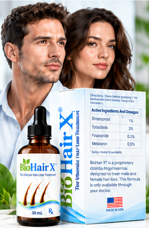
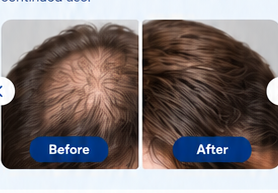

Consult
Speak with a licensed provider about your hair-loss concerns.
Advanced Hair Loss Prevention & Regrowth
The Ultimate Hair Loss Treatment
A physician-directed topical treatment with clinically studied ingredients to help you achieve thicker, fuller, healthier-looking hair.

Thicker, fuller, healthier-looking hair with continued use.

Illustrative placeholder · not verified patient results.
Speak with a licensed provider about your hair-loss concerns.
If appropriate, a personalized BioHair X® formula is prepared.
Your treatment is shipped directly to your door.
A physician-directed formula with complementary mechanisms to support hair regrowth, improve hair density, and maintain existing hair.
Helps extend the hair growth phase for longer, thicker, fuller-looking hair.
Learn More →JAK inhibition can stimulate resting hair follicles to reenter their active growth phase.
Learn More →Reduces DHT, the hormone linked to follicle shrinkage and hereditary hair thinning.
Learn More →Provides antioxidant activity that helps protect hair follicles from oxidative stress.
Learn More →Helps stimulate and prolong the anagen phase.
Helps existing hair look fuller and thicker.
Formulated with clinically studied ingredients.
Easy to use, with direct-to-door delivery.
BioHair X® is designed for both men and women experiencing different types of hair loss, including:
“After a few months of using BioHair X®, my hair looks noticeably thicker and healthier. I’m very happy with the results!”
— Customer story placeholder
Sample testimonial · pending verification.
BioHair X® is formulated with ingredients supported by clinical research.
Explore the Research →Dr. Robert Hashemiyoon has been a leader in hair restoration since 1993. As co-founder of BioHair X®, he has developed innovative hair restoration treatments for decades, including the Sitari HARE procedure with Alma TED technology.
Visit Elite Hair Institute →Dr. Tom Flashman is an experienced physician who has incorporated BioHair X® into his patient care for the past five years, offering a physician-directed approach to non-surgical hair restoration.
View Dr. Flashman's Profile →Verify the supplied photograph's identity, the five-year use claim, and physician permissions before publishing.
Hair growth takes time, and responses vary. There is no established BioHair X®-specific timeline for visible regrowth. Your clinician can help you monitor progress.
The combination has not been established as safe or effective through FDA approval. Discuss possible adverse effects, contraindications and interactions with a licensed prescriber.
A qualified clinician must determine whether any formulation is appropriate, including pregnancy-related precautions and the risks of finasteride and tofacitinib.
The formula contains prescription medicines. A licensed prescriber must assess whether treatment is appropriate; availability and fulfillment depend on applicable requirements.